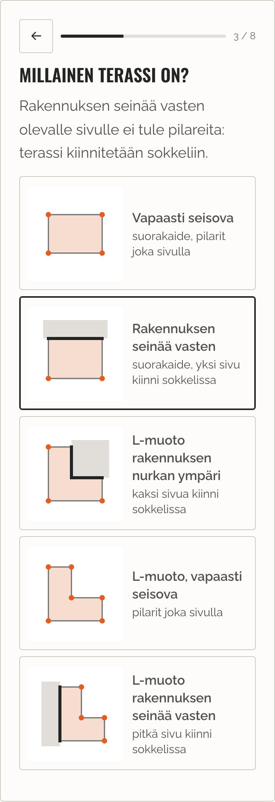
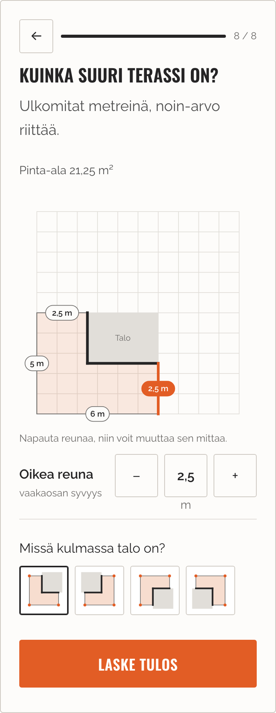
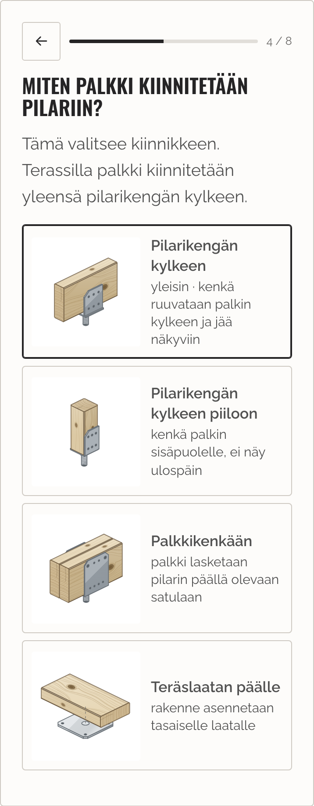
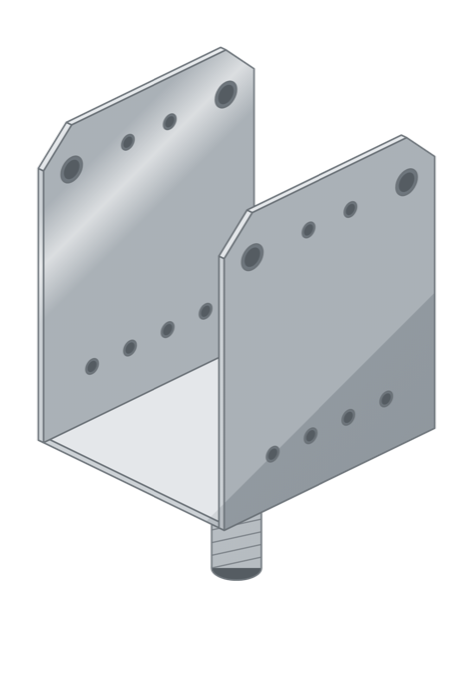
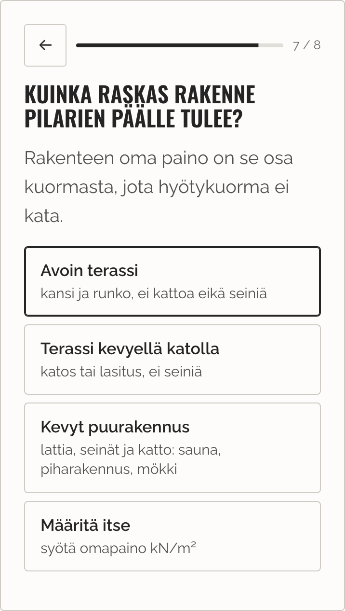
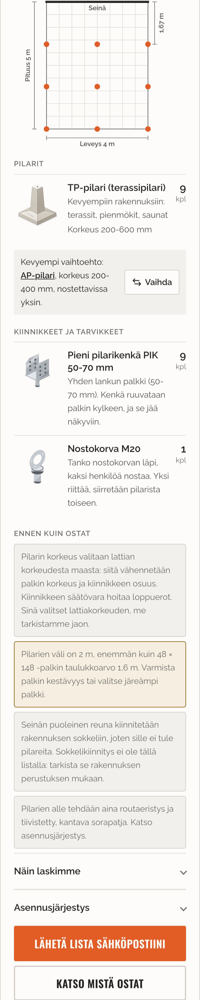
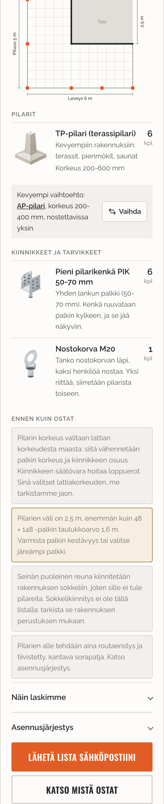

Suunnittele perustus: mitä uutta
Päivitys 3.11.2026. Tämä versio toteuttaa BCE:n palautteen (25.9.) ja vastaukset avoimiin kysymyksiin. Laskuri: Suunnittele perustus.
1. Terassi seinää vasten ja L-muoto
Terassille on uusi kysymys Millainen terassi on? Vaihtoehtoja on viisi: vapaasti seisova, rakennuksen seinää vasten, L-muoto rakennuksen nurkan ympäri, L-muoto seinää vasten ja vapaasti seisova L. Seinää vasten olevalle sivulle ei tule pilareita, vaan terassi kiinnitetään sokkeliin.
L-muodon mitat säädetään suoraan piirroksen reunoista: reunaa napauttamalla saa säädettäväksi juuri sen mitan. L:n voi kääntää mihin tahansa neljästä suunnasta.


2. PIK palkin kylkeen, PAK uutena kuvana
Kysymys on nyt Miten palkki kiinnitetään pilariin?, ja PIK-vaihtoehdon kuvassa kenkä on vaakapalkin kyljessä. Aiemmin vaihtoehto puhui pystyrakenteesta ja kuvassa oli tolppa, mikä ohjasi terassin rakentajan valitsemaan PAK-mallin. Palkkikenkä PAK on piirretty uudelleen 3D-mallinne mukaan: U-satula, jonka levyjen yläkulmat on viistetty ja joka nousee pilarista kierretapin varassa.


3. Rakenteen paino BCE:n luvuilla
Painokysymyksessä on kolme luokkaa antamillanne luvuilla: avoin terassi 0,6, terassi kevyellä katolla 1,2 ja kevyt puurakennus 2,0 kN/m². Luku lisätään hyötykuormaan.

4. Tulos: väli vähintään 1,5 m, välin mitta ja AP:n vaihto
- Pilarien väli on aina vähintään 1,5 m, kuten valitsitte. Jos väli ylittää palkin taulukkoarvon, tulos kertoo sen ja kehottaa varmistamaan palkin kestävyyden.
- Pohjapiirroksessa on yhden välin mitta kumpaankin suuntaan, jotta pilarit osaa sijoittaa.
- TP on suositus ja AP vaihtoehto. AP:n nimi on linkki tuotesivulle, ja Vaihda-painike vaihtaa sen listan pilariksi. Rivillä näkyy myös korkeusalue, josta näkee mitä kevyemmässä menettää.
- Jokaisessa tuloksessa on ohje routaeristyksestä ja vakaasta, tiivistetystä pohjasta.


5. Poistettu
Maapohjakysymys, kaltevan alustan kysymys ja autokatos. Terassin polussa on nyt 8 vaihetta, ennen 9.
Avoinna
Palkkikengän mitat. Kuva on piirretty 3D-mallin mittasuhteista. Tarvitsisimme levyn leveyden ja paksuuden, reikäjaon ja mutterin koon. Tarkoittaako 100 × 200 satulan korkeutta 200 mm?
Vähimmäisvälin vaikutus. 1,5 m:n sääntö vähentää pilareita selvästi: 4 × 5 m terassi 48 × 148 -palkilla saa nyt 12 pilaria, kun ennen 20. Väli ylittää palkin taulukkoarvon (1,6 m) noin puolessa mitoista, ja L-muodossa suurin väli voi olla 2,5 m. Onko tämä hyväksyttävää, vai halutaanko välille myös yläraja?